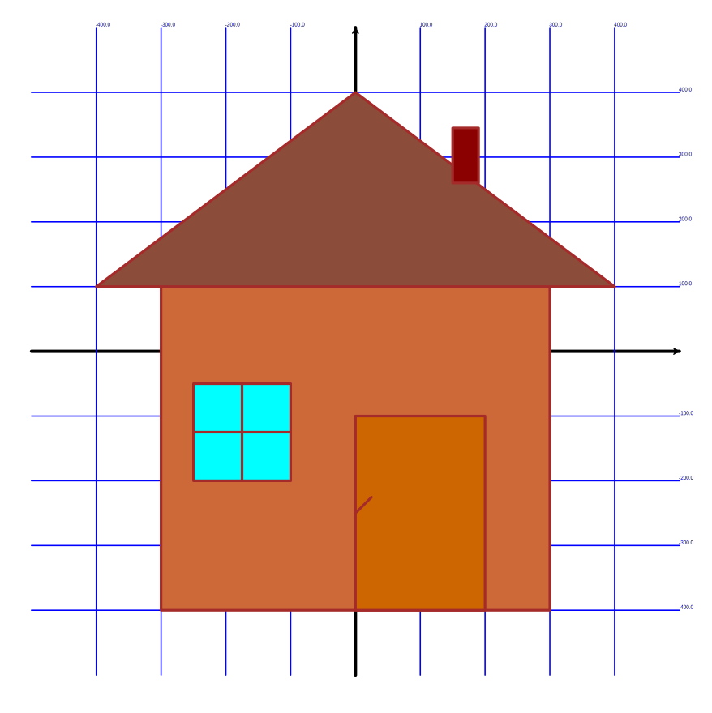

Сегодня мы продолжали рисовать дом при помощи Turtle 🏠🐢
Код:
from turtle import *
from coord import step
width(4)
color("brown")
# step = 70
# рисуем стены
penup()
setheading(270)
goto(-3 * step, step)
begin_fill()
fillcolor('sienna3')
pendown()
forward(5 * step)
left(90)
forward(6 * step)
left(90)
forward(5 * step)
end_fill()
# рисуем крышу
penup()
begin_fill()
goto(-4*step,step)
pendown()
goto(4*step,step)
goto(0,4*step)
goto(-4*step,step)
fillcolor('salmon4')
end_fill()
# Рисуем дверь
penup()
# home()
goto(0,-100)
# setheading(0)
right(90)
pendown()
begin_fill()
goto(200,-100)
right(90)
forward(300)
right(90)
forward(200)
right(90)
forward(300)
fillcolor('DarkOrange3')
end_fill()
# рисуем дверную ручку
goto(0,-200)
penup()
backward(50)
right(45)
pendown()
forward(35)
# рисуем окно
penup()
backward(35)
goto(-100,-200)
pendown()
begin_fill()
setheading(90)
forward(150)
left(90)
forward(150)
left(90)
forward(150)
left(90)
forward(150)
fillcolor('cyan')
end_fill()
# рисуем линии окна
left(90)
forward(75)
left(90)
forward(150)
backward(75)
left(90)
forward(75)
backward(150)
# Рисуем трубу
penup()
backward(395)
left(90)
forward(225)
forward(100)
right(90)
pendown()
begin_fill()
forward(25)
forward(60)
left(90)
forward(40)
left(90)
forward(85)
left(90)
forward(30)
forward(10)
fillcolor('DarkRed')
end_fill()
done()
Результат:
Добавь на рисунок солнце и траву. Пример.
{kind=link}